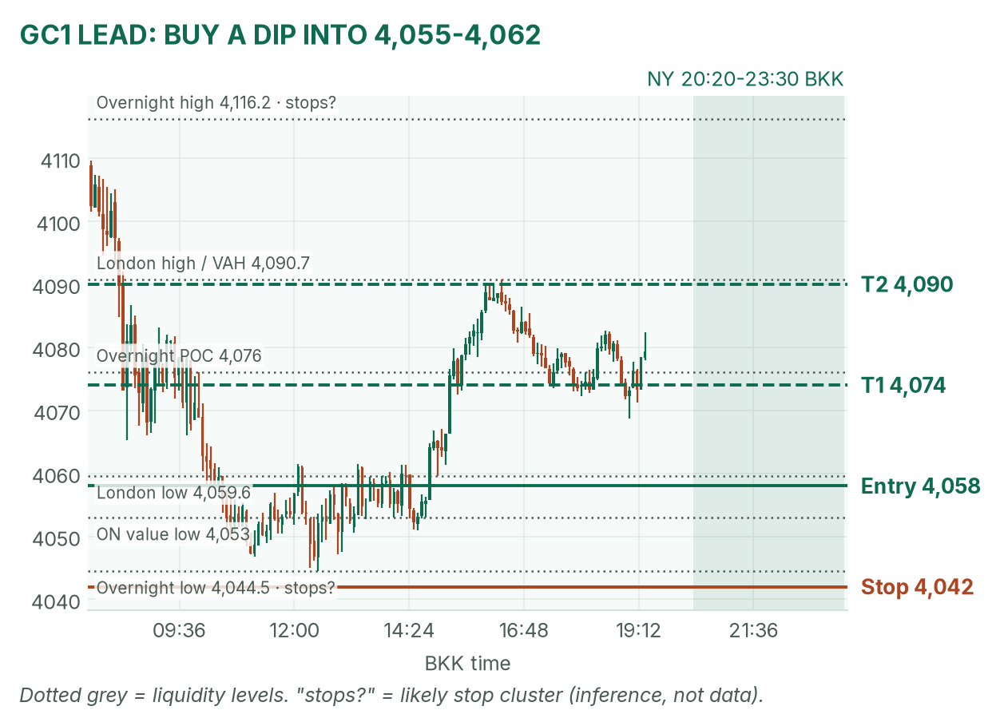
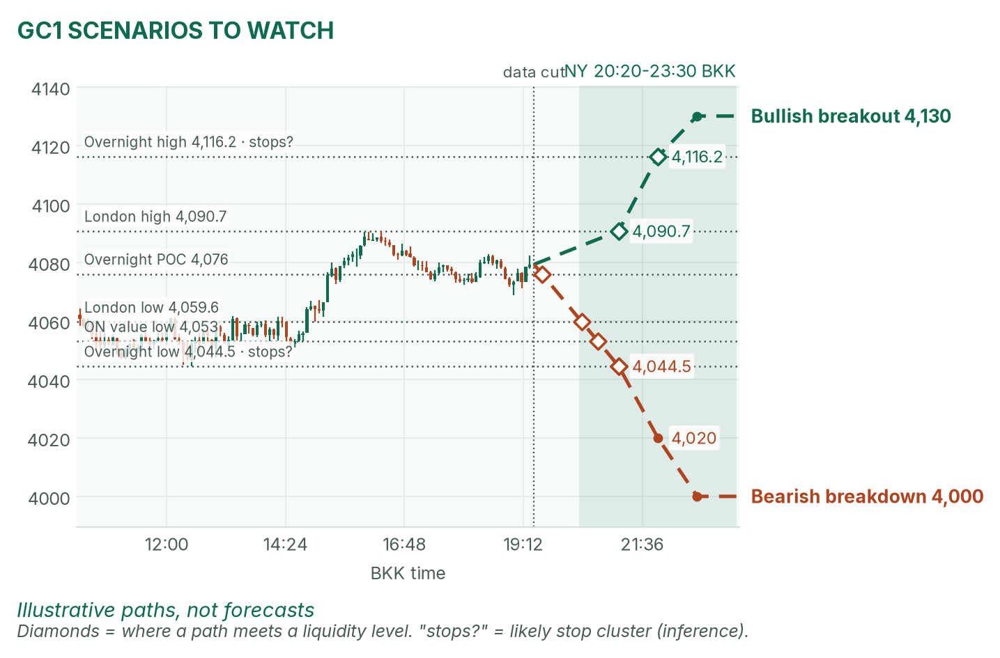
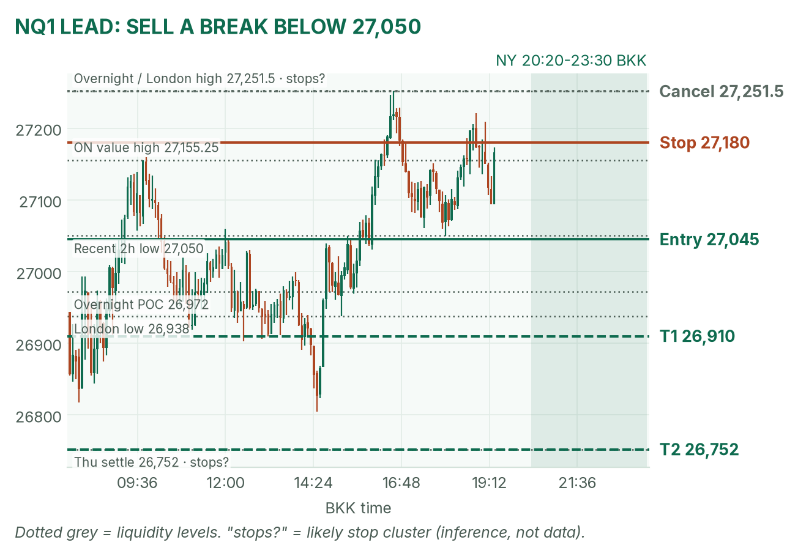
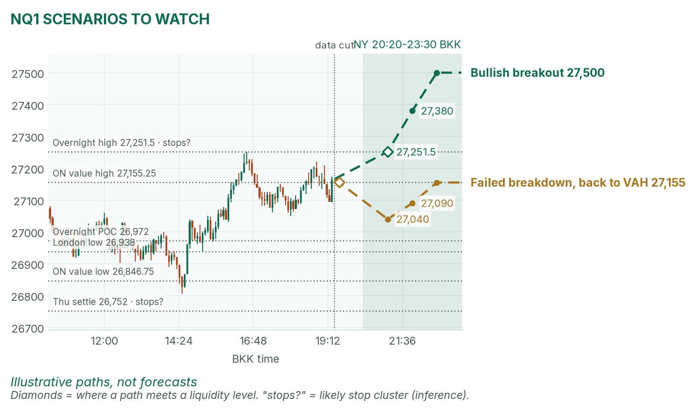

Payrolls decide the tune. Gold rests on its overnight POC; Nasdaq sits under its overnight high after Thursday's bounce.
Window 20:20–23:30 BKK. Data cut 19:20 BKK: GC 4,079.3, NQ 27,166 (TopstepX Z26). Levels only. Ideas, not advice.
Summary
GC: buy a dip into 4,055–4,062 that holds after the print. Stop 4,042, target 4,090 (2.0R). About 35%.
NQ: sell a 5m close below 27,050 after the 21:30 stock open. Stop 27,180, target 26,752 (2.2R). About 33%.
US nonfarm payrolls at 20:30, ten minutes into the window. No entries 20:25–20:32.
Flat by 23:30, no matter what.
The market story
Gold sold to 4,044.5 at 12:30 BKK, then climbed back to its overnight POC (point of control: the price where the most contracts traded), 4,076. Still about 34 points under Thursday's settle (4,113.5, per April). Nasdaq bounced from 26,366.5 to a London high of 27,251.5 and rests near the overnight value high (27,155).
US yields edged up (10-year 4.859%, +2.2 bp), so borrowing got a touch more expensive, and the dollar sits near a one-week high. Payrolls can flip that mix in one bar.
How I read it: gold's bias is repair-from-the-low, so I buy a held dip at value after the print. NQ's bounce is extended into a binary event, so I sell a break of the fresh low, not a chase of the high.
News (BKK)
Time
Event
Forecast
Prior
Read
20:30
US nonfarm payrolls (Oct)
~59k–65k
29k
Hot (well above 65k, firm wages) lifts yields: bad for GC, softens NQ. Soft (well under ~59k or jobless above 4.2%) does the opposite.
Bias: mildly bullish. Price holds the overnight POC. My gold rule fades the COMEX opening range (from 20:20) toward the POC; payrolls land inside that range, so I wait, then buy a held dip.
The trade: buy the dip at value
Entry
4,055–4,062 (plan 4,058): dip through the London low (4,059.6) that holds above 4,050 on 5 minutes, after 20:32
Stop
4,042: under overnight low 4,044.5, where sell stops likely sit (inference)
Targets
1R partial 4,074 (near the POC) · full target 4,090 (2.0R), the value high / London high zone
Cancel
Trades below 4,042 before entry, or none by 22:30
Probability
~35%, an estimate. Basis: NY gold opening ranges mostly failed and reverted in my study (not significant); 32 pts to target is under a typical 44-pt window.
Why: in a repair, the first held dip at value is where buyers reload. A hot print can push gold through 4,042; then there's no trade. April's soft case agrees (retest toward 4,116); her hot case disagrees. VWAP (volume-weighted average price) is a filter only after 20:50.

GC 5m to 19:20 BKK, window shaded. Price on the overnight POC.

Illustrative paths, not forecasts. Dotted lines mark liquidity levels.
Scenarios to watch
Bullish breakout: 15m close above 4,090.7, then 4,116.2 (overnight high), where buy stops likely sit (inference). Aims for 4,130.
Bearish breakdown: hot print and 15m close below 4,044.5. Aims for 4,020, then 4,000.
Nasdaq (NQ1)
Bias: cautious bearish into the cash open. The repair from 26,366.5 to 27,251.5 is real but stalls under the overnight high into payrolls. My NQ rule trades breaks of the 5-minute range after 21:30.
The trade: bearish breakdown
Entry
27,045 on a 5m close below 27,050 and the 21:30–21:35 range low
Stop
27,180: back above the overnight value high (27,155)
Targets
1R partial 26,910 · full target 26,752 (2.2R), Thursday's settle, past the overnight POC (26,972)
Cancel
Trades 27,251.5 before entry, soft payrolls that reclaim 27,155, or none by 22:30
Probability
~33%, an estimate. Basis: NQ 5-minute range breakouts averaged +0.37R in my study (not significant); soft payrolls are the spoiler, so I shade it down.
Why: losing the post-London shelf opens the path to the POC and Thursday's settle. Stop is 135 points (about 3 five-minute ATRs of 45). If the 21:30 range is wider than about 100 points, skip. April's hot case agrees; her soft case is the cancel. VWAP filter only after 22:00.

NQ 5m to 19:20 BKK, window shaded. Trigger under the recent 2-hour low.

Illustrative paths, not forecasts.
Scenarios to watch
Bullish breakout: 5m close above 27,251.5 and the opening-range high. Aims for 27,380, then 27,500.
Failed breakdown: poke below 27,050 that closes back above within 15 minutes. Aims for 27,155.
6E (not traded): 1.1191, near overnight low 1.1184. London: GC never triggered; 6E stopped.
Before you click
ORB bases. GC NY: COMEX 20:20 range, ends at the first candle under half the average volume of the first two, fade to POC. NQ: fixed 5-minute range after 21:30, trade breakouts.
Checklist. Room to max loss? Within daily rules? No release within 30 minutes? With the bias? At a marked level? Setup tagged? Entry, stop, partial, target set? Calm?
Reset (60 seconds). Breathe in 4, hold 4, out 6, five times. Name the feeling; if "eager" or "frustrated", wait 5 minutes.
TopstepX Z26 bars; overnight from 06:00 BKK. Settles and news: April's pre-NY brief (CNBC, Reuters, Dow Jones).